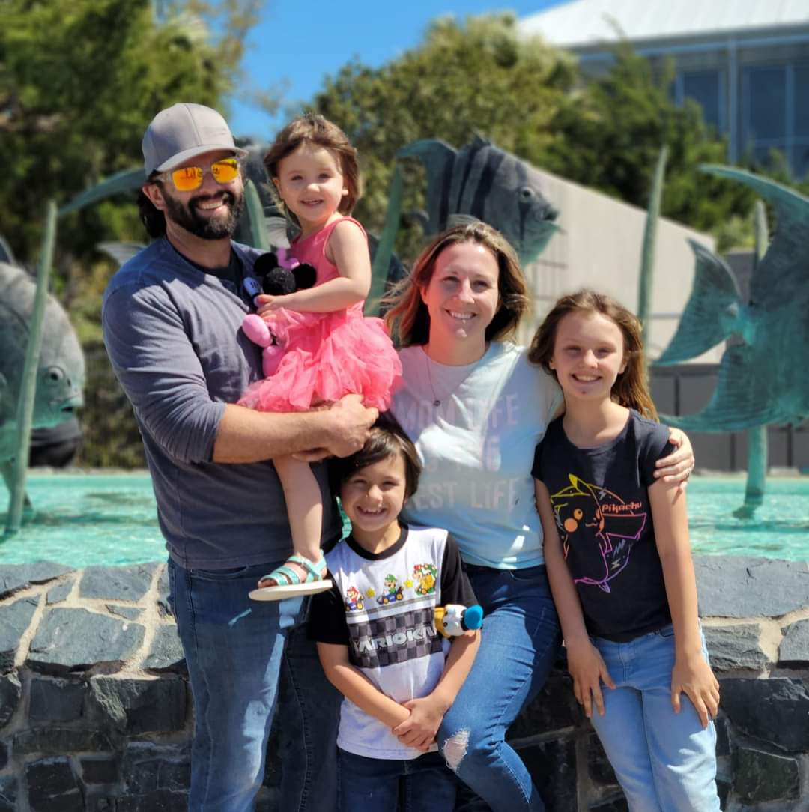

About Me
 My name is Mark Turner, I live with my wife and 3 young children in the beautiful port city of Wilmington, North Carolina. Prior to becoming a Full Stack Developer, I owned and operated a successful epoxy flooring business in the Cape Fear region with my wife. For the 15 years prior to that I was a drilling rig supervisor and superintendent for ExxonMobil, and had the unique opportunity to work all over the world with colleagues from over 60 countries.
Find a Brewery and Restaurant in the City of your Choice
Contact
- 910-523-6731
- mark.edward.turner@gmail.com
- GitHub